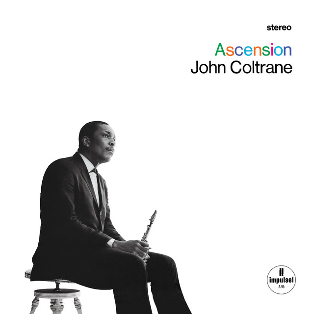

Crescent


Pubblicato a luglio 1964. Registrato tra il 27 aprile 1964 e il 1º giugno 1964.
Cliccare sulle immagini per ascoltare!
Pubblicato a luglio 1964. Registrato tra il 27 aprile 1964 e il 1º giugno 1964.


Pubblicato a gennaio 1965. Registrato il 9 dicembre 1964.


Pubblicato a febbraio 1966. Registrato il 28 giugno 1965.


Pubblicato nel 1991. Registrato tra l'11 e il 22 luglio 1966.


Pubblicato a settembre 1974. Registrato il 22 febbraio 1967.